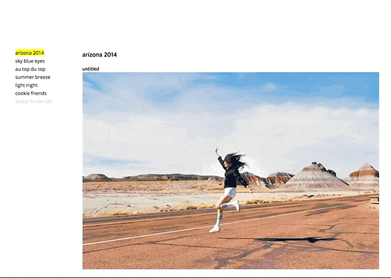
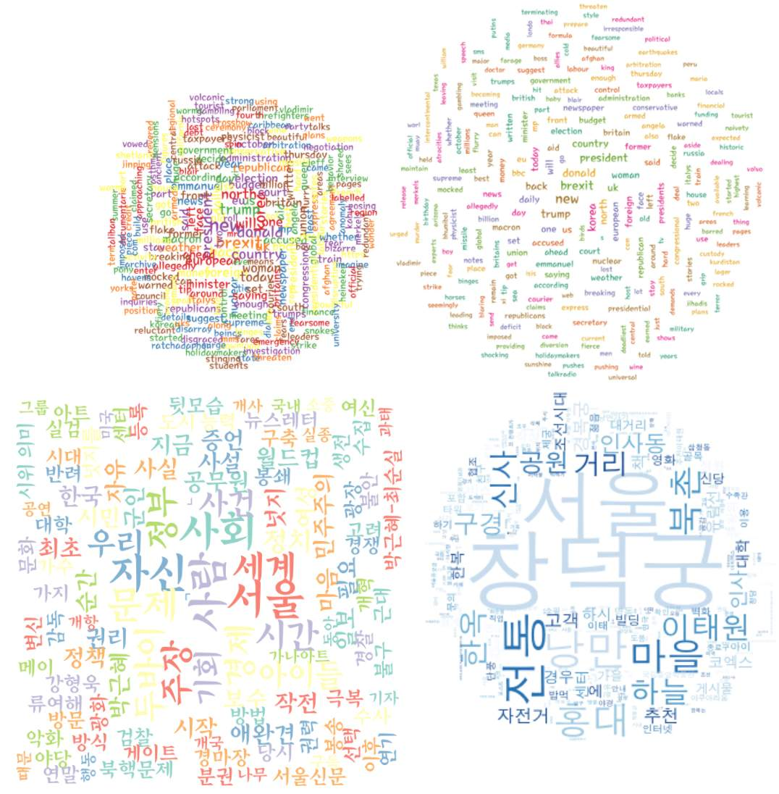

웹개발 & 디자인
Python & Django

Python과 Django 프레임웍으로 블로그 웹어플리케이션을 제작했습니다. User 페이지에서는 포스트 제목과 내용, 포스팅 날짜를 확인할 수 있고, Admin 페이지에서는 직접 포스팅을 관리할 수 있습니다. (추가, 삭제, 수정 등) Admin 사이트에 로그인했을 시, User 페이지에서도 포스트를 추가할 수 있습니다.
HTML, CSS, JavaScript
HTML, CSS와 JavaScript를 이용하여 심플한 사진 포트폴리오 웹페이지를 제작했습니다. 현재 페이지도 이와 유사하게 이루어져 있으며, Bootstrap도 사용하고 있습니다. 영화 트레일러 웹페이지는 Python도 함께 사용되었습니다.
D3.js

D3.js를 활용해 현재 시간을 다양한 방법으로 시각화 하는 프로젝트 입니다.
데이터분석 & 시각화
R
R을 활용하여 특정 주제에 대한 텍스트를 읽어 wordcloud를 만들어 보았습니다. HTML에서 태그의 속성값을 읽어와, tm(영어)과 KoNLP(한국어)를 활용하여 키워드를 추출하고 스탑워즈를 제거했습니다. 데이터테이블로 정리하여 빈도수를 시각화 요소로 활용했습니다. (빈도수가 높을수록 중앙에 근접)
Python & Excel

구글트랜드, 네이버데이터랩과 트위터의 검색, 포스팅 데이터를 수집해 19대 대선 후보들의 관심도와 당선 가능성을 시각화하는 프로젝트입니다. 웹사이트의 디자인은 Sketch와 Photoshop을 통해 우선 작업했고, 이후 HTML로 옮겼습니다.
Python, Bash, D3.js

오픈API를 통해 서울 기온과 날씨의 실시간 데이터를 수집, 정제하여 시각화 하는 프로젝트 입니다. 실시간 파싱은 AWS EC2의 Ubuntu에서 이루어집니다. 일간 기온차와 고/저기온의 시점, 습도 데이터를 D3.js로 시각화 했습니다.
일부 프로젝트와 관련 학습 내용은 tech blog에 기록해 놓았습니다.
블로그 보기 (Eng)